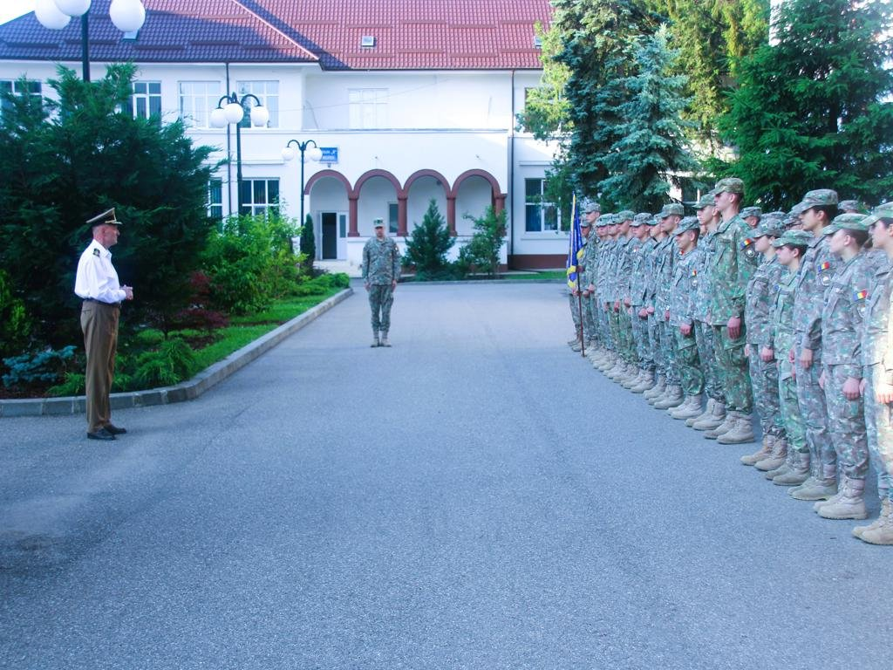
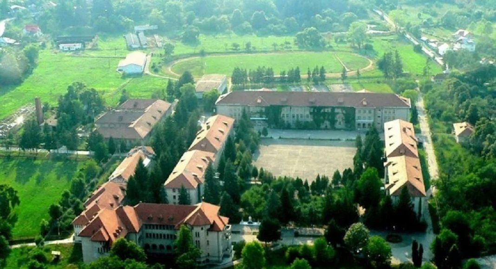
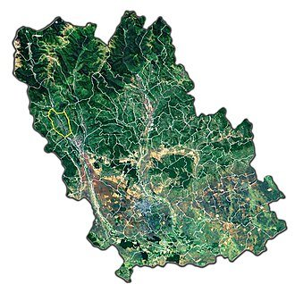

Casa Rodica
Refugiul verde al Brezei
O vilă întreagă pe un hectar de livadă, cu piscină, foișor și trei zone de divertisment. Până la 20 de oaspeți.
Descoperă Casa RodicaEmblematicul Colegiu Național Militar „Dimitrie Cantemir” este unul dintre simbolurile Brezei — un reper cu istorie și caracter, la scurtă distanță de centrul stațiunii.

Puține orașe mici din România au un reper la fel de bine cunoscut precum Colegiul Național Militar „Dimitrie Cantemir” din Breaza. Clădirea și parcul din jur fac parte din identitatea vizuală a orașului și merită o oprire în timpul unei plimbări prin stațiune.
Colegiul este strâns legat de identitatea Brezei și de tradiția învățământului militar românesc. Pentru vizitatori, este un punct de reper ușor de recunoscut și un bun pretext pentru o plimbare prin zonă.
Instituția are o istorie îndelungată în formarea tinerilor pe filieră militară, iar prezența ei a marcat dezvoltarea orașului de-a lungul timpului. Arhitectura și parcul contribuie la atmosfera aparte a Brezei.
Chiar dacă accesul în incintă este limitat, exteriorul și împrejurimile oferă un cadru plăcut pentru fotografii și o plimbare lejeră.

Zona din jurul colegiului se pretează la plimbări liniștite, iar centrul stațiunii — cu magazinele și mănăstirea — este la câțiva pași. Toate acestea, la scurtă distanță de casă, unde te întorci pentru odihnă și relaxare.
Colegiul Național Militar „Dimitrie Cantemir” are o tradiție îndelungată în formarea tinerilor pe filieră militară. De-a lungul deceniilor, prezența sa a influențat dezvoltarea și identitatea orașului Breaza.
Deși accesul în incintă este limitat, exteriorul și parcul din jur oferă un cadru plăcut pentru o plimbare și câteva fotografii. De aici, centrul stațiunii și celelalte repere sunt la câțiva pași.

Accesul poate fi limitat — respectă indicațiile de la fața locului. Exteriorul și împrejurimile rămân plăcute de vizitat.
Da, este unul dintre reperele recognoscibile ale Brezei și un bun punct de orientare în oraș.
Cu o plimbare în centrul Brezei și o vizită la mănăstire.
Cazare în Breaza
O vilă întreagă pe un hectar de livadă, cu piscină, foișor și trei zone de divertisment. Până la 20 de oaspeți.
Descoperă Casa RodicaCasa de poveste cu mansardă „Hobbit", living de 100 mp și ceaun pentru 30. Până la 20 de oaspeți.
Descoperă Casa Alinka